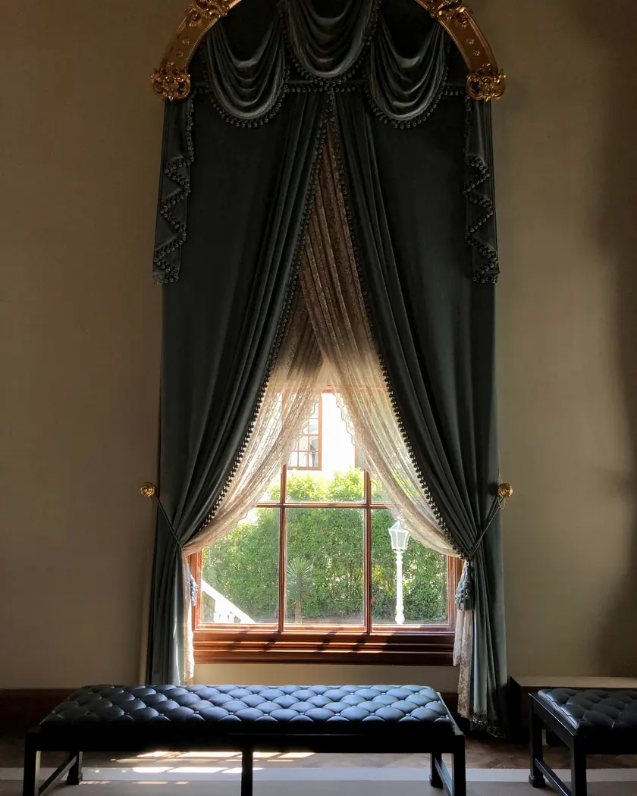
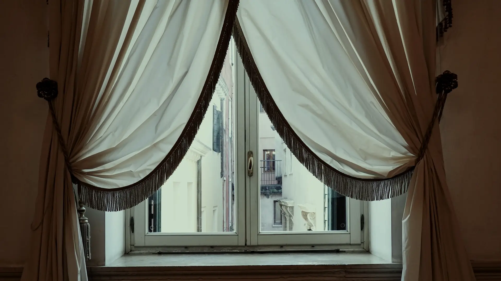
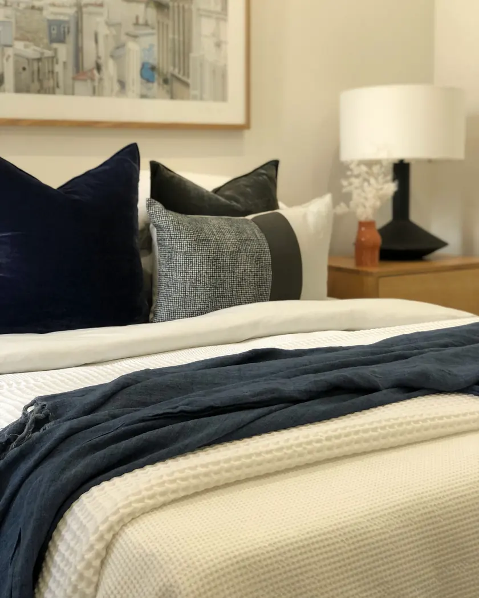
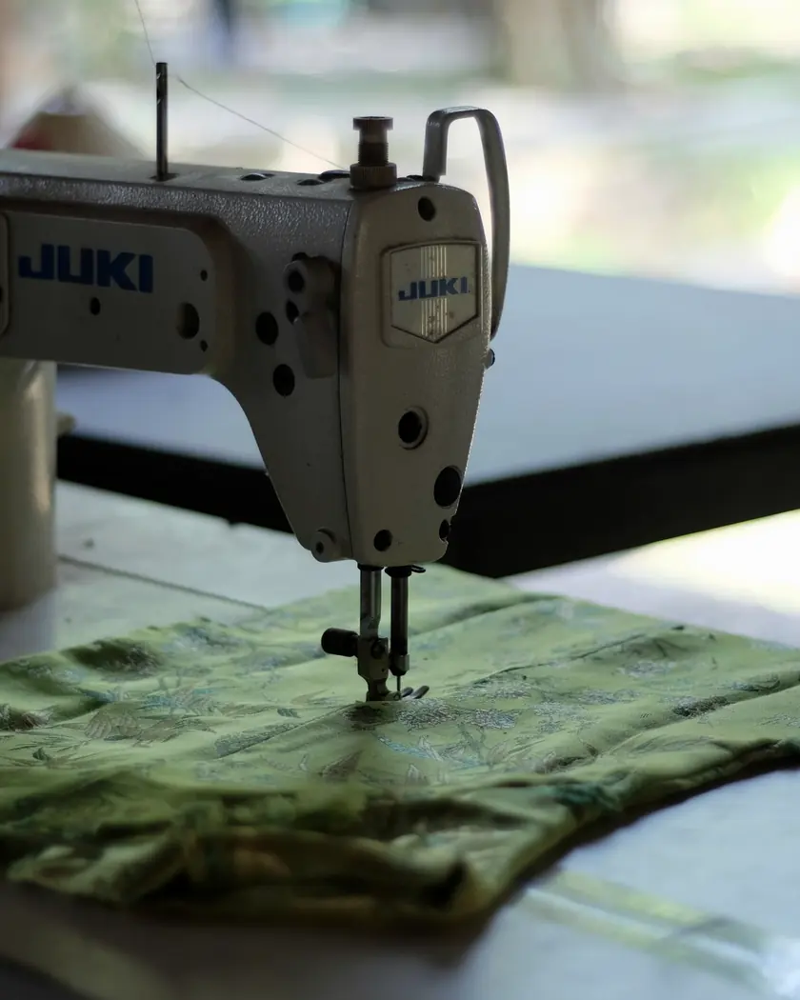
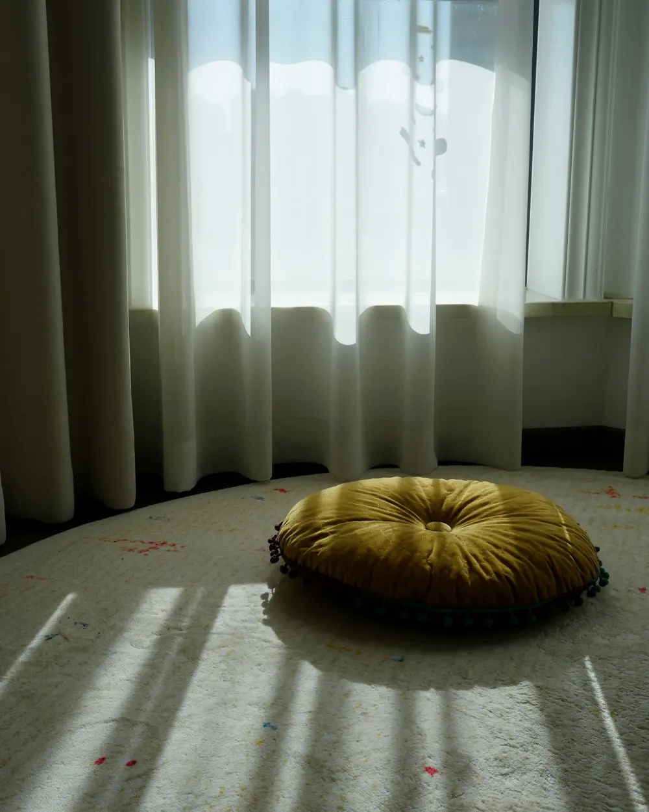
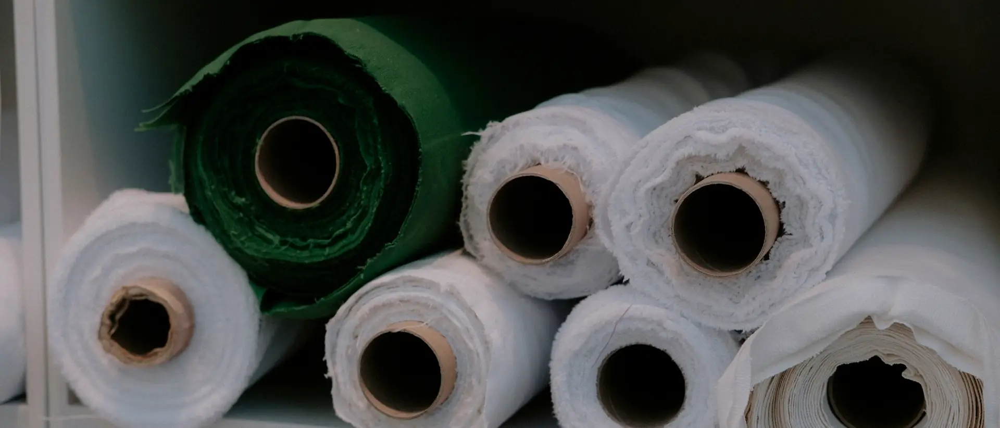
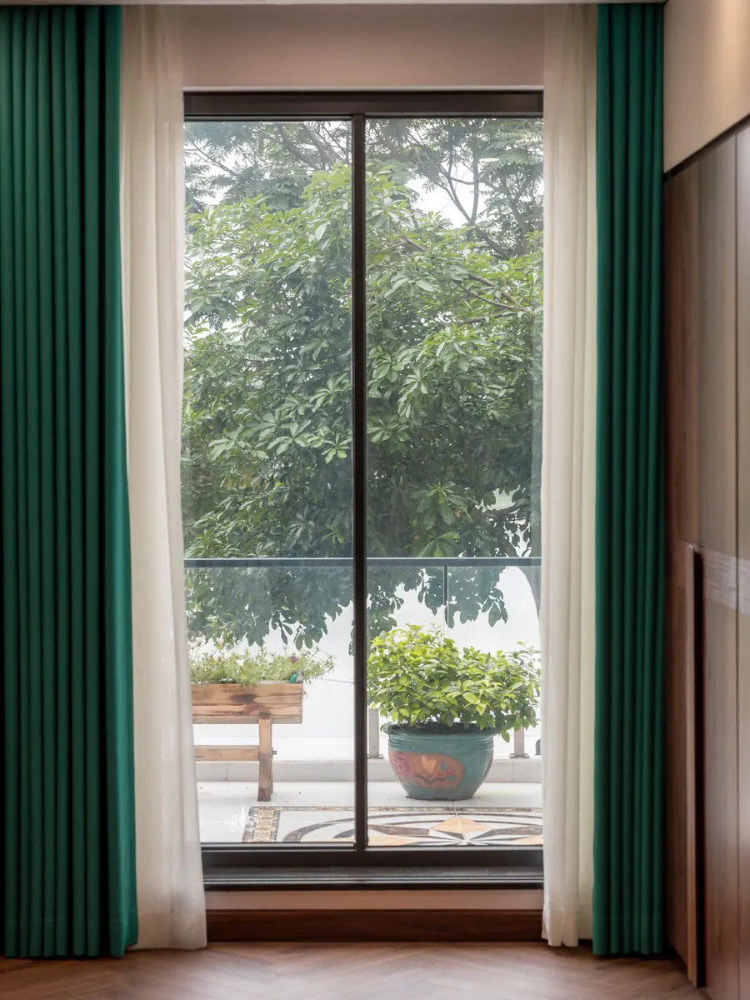

01
Штори та портьєри
Підбираємо тканину, довжину і спосіб кріплення під ваше вікно, щоб штори пасували до кімнати.

Студія текстильного дизайну · Львів
Оформлюємо кімнати шторами та портьєрами, шиємо покривала, подушки і чохли. Чекаємо у студії на Княгині Ольги, 95.
Послуги
Штори, портьєри, покривала, подушки і чохли. У студії також можна підібрати жалюзі.

Підбираємо тканину, довжину і спосіб кріплення під ваше вікно, щоб штори пасували до кімнати.

Шиємо покривала і декоративні подушки, щоб текстиль у спальні чи вітальні виглядав як одне ціле.

Шиємо чохли за вашими розмірами з тканини, яку обираємо разом.

Кімната цілком
Штори, покривало, подушки і чохли можна замовити разом. Тоді тканини підбираємо так, щоб вони пасували одна до одної, до меблів і до світла у вашій кімнаті.

Магазин штор і власне пошиття: від вибору тканини до готового виробу.
Як працюємо
Напишіть або зателефонуйте: яка кімната, скільки вікон і що хочете змінити. Фото вікон допоможуть.
Приходьте на Княгині Ольги, 95: разом підберемо тканини, кольори і фурнітуру.
Шиємо штори, покривала, подушки чи чохли під ваші розміри і домовляємося, коли забрати замовлення.

Контакти
Графік роботи
| Понеділок | 10:00 до 19:00 |
|---|---|
| Вівторок | 10:00 до 19:00 |
| Середа | 10:00 до 19:00 |
| Четвер | 10:00 до 19:00 |
| Пʼятниця | 10:00 до 19:00 |
| Субота | 10:00 до 19:00 |
| Неділя | 12:00 до 19:00 |
Написати
Яка кімната, скільки вікон, що хочете пошити. Відповімо листом або зателефонуємо.
Або одразу: bahroma.lviv@gmail.com